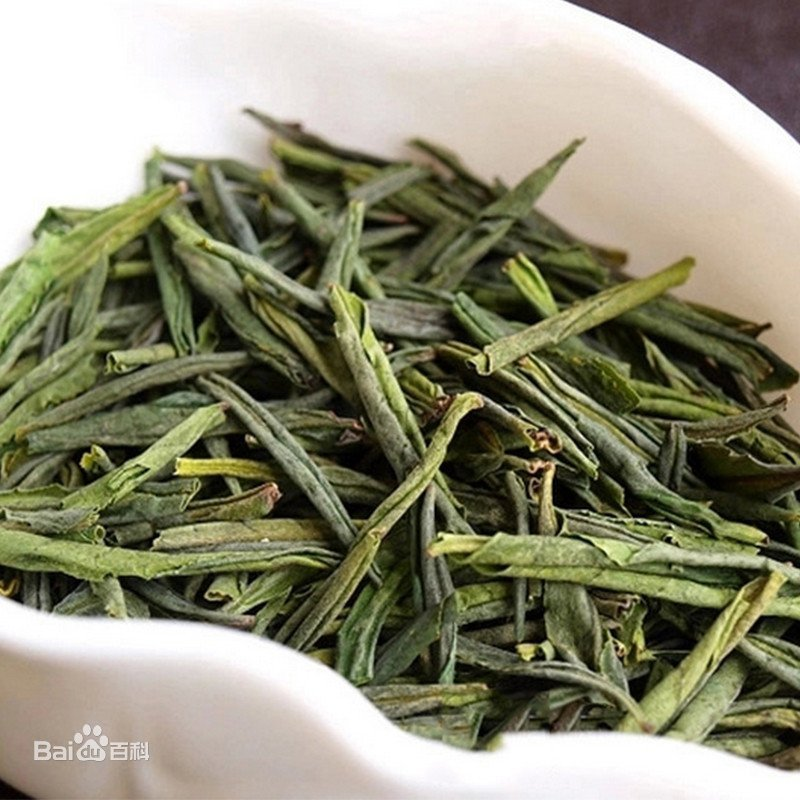
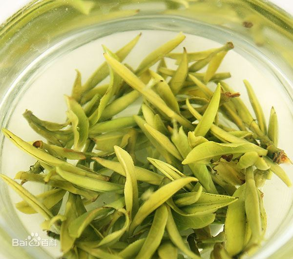
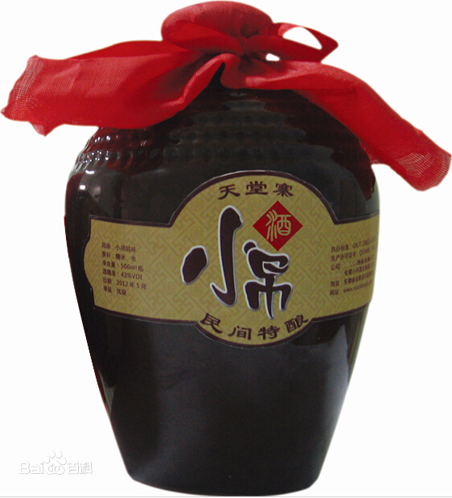
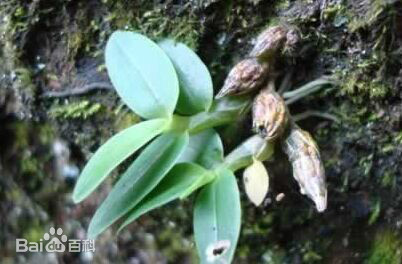
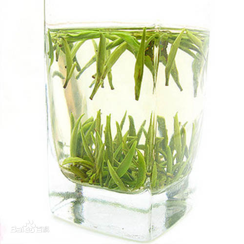
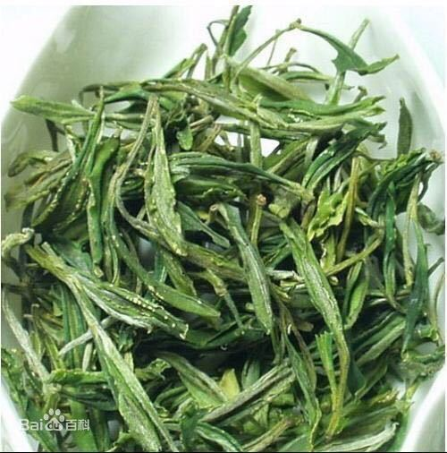
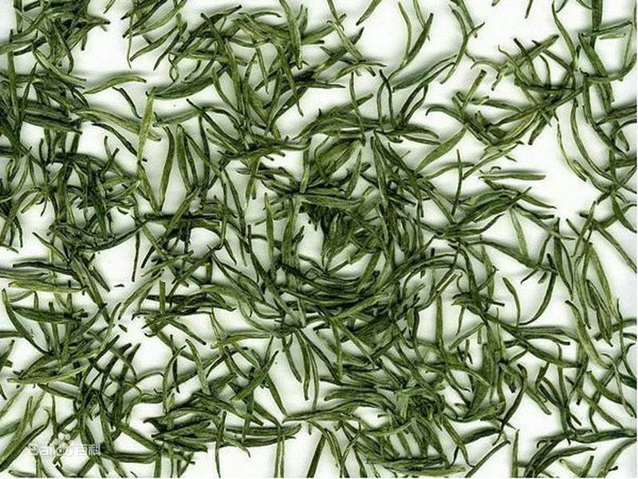

|  | 六安瓜片，中国历史名茶，中国十大历史名茶之一，简称瓜片，
产自安徽六安。唐朝“庐江六安茶“，为名茶。明始称”六安瓜片“，
为上品、极品茶。清为朝廷贡茶。为绿茶特种茶类。 |
|  | 霍山黄芽产于安徽省霍山县，为中国名茶之一，2006年4月，国家质检总局批准对霍山黄芽实施地理
标志成品保护。
|
|  | 小吊酒是六安大别山区特产，有三个特点，其一是酿酒原料为大别山区主产谷物，包括大米、糯米、苦荞、山区
高粱等；其二是酿酒所用的水为山泉水，大别
山为中国的南北分水岭，特别是主峰天堂寨，水质独特，其三是酿造方法独特，其酿造过程及方法已列为非物质文化遗产。
|
|  | 霍山石斛，俗称米斛，是兰科石斛属的草本植物，中国国家地理标志产品，主产于大
别山区的安徽省霍山县，大多生长在悬崖峭壁岩石缝隙和参天古树上，霍山石斛历史上被誉为”
中华九大仙草之首“，”救命仙草“。
|
|  | 金寨翠眉外形状匀齐，纤秀多毫。冲泡时芽头直立在杯中，犹如万笋林立，杯面雾
气结顶，汤色碧绿，口感鲜爽，回味甘甜，乃茶中精品。
|
|  | 舒城小兰花形似兰花初放，色泽翠绿显毫，滋味鲜醇回甜，香气清新持久，品质优异。
|
|  | 华山银毫产自六安南部大别山与东石笋一带，独一芽蕊，细秀如毫，银白翠绿，每
500克有芽蕊12万之多，被评为吉尼斯之最，可谓色香味形俱佳。
|

山水新城，魅力六安